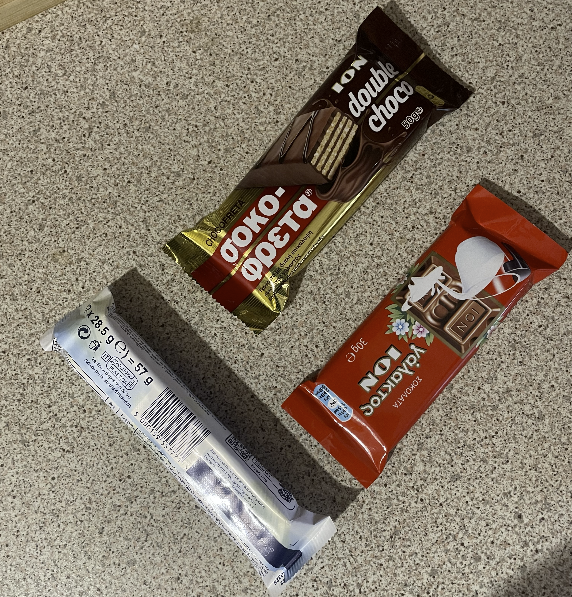
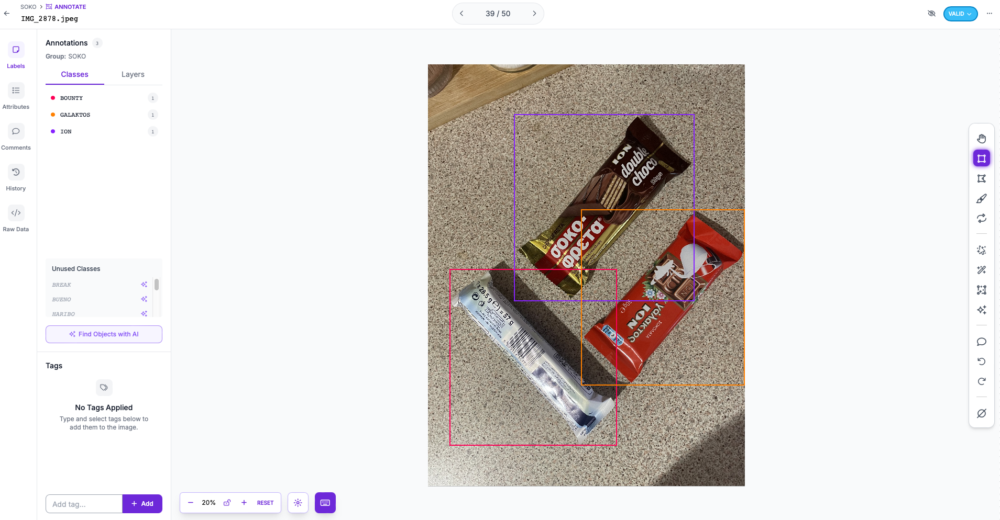
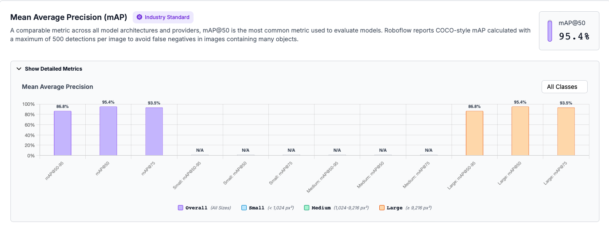
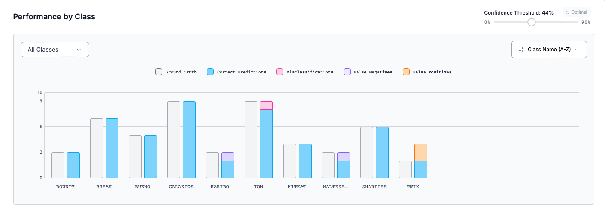

A 10-class object-detection project built from a self-collected and manually annotated dataset, then trained with YOLOv11 through Roboflow’s hosted workflow.
Project focus: the end-to-end dataset workflow—collecting images, annotating object locations, validating labels, and evaluating a trained detection model.
10snack-product classes
157original images captured
95.4%mAP@50 evaluation result
Building the dataset
From physical products to labelled training data
Rather than starting with a ready-made dataset, I selected 10 snack products and captured 157 original images. The images vary object positions, combinations, and orientations to create a practical object-detection dataset.
Every image was manually annotated in Roboflow Annotate. For each product instance, I drew a bounding box and assigned the correct class label.
Data collection and annotation
Original image to bounding-box labels

Original dataset imageOne of the images captured for the custom snack dataset.

Manual annotation in RoboflowBounding boxes and class labels identify Bounty, Galaktos, and Ion products in the same scene.
Model evaluation
Strong localisation across detection thresholds
The YOLOv11 model was trained using Roboflow’s hosted workflow. Mean Average Precision evaluates whether the model identifies the correct product and places a sufficiently accurate bounding box around it.
95.4% mAP@50
High detection performance when a predicted box overlaps the labelled object by at least 50%.
86.8% mAP@50–95
Strong performance across increasingly strict bounding-box overlap thresholds.

Performance by class
Inspecting errors, not only one headline score
The per-class analysis uses Roboflow’s recommended 44% confidence threshold. It distinguishes correct predictions from missed detections, misclassifications, and false positives, making it possible to identify which classes need additional data or annotation review.

Most classes show correct predictions matching their ground-truth counts. The remaining errors provide concrete targets for future data collection and model improvement.
Training workflow
YOLOv11 with Roboflow
Roboflow was used for annotation, dataset versioning, hosted YOLOv11 training, and model evaluation. The platform handled training infrastructure while I focused on dataset quality and interpretation of model results.
Next improvements
Expanding the dataset
Future work would add more images, lighting conditions, backgrounds, occlusions, and product orientations—especially for classes with misses, misclassifications, or false positives.